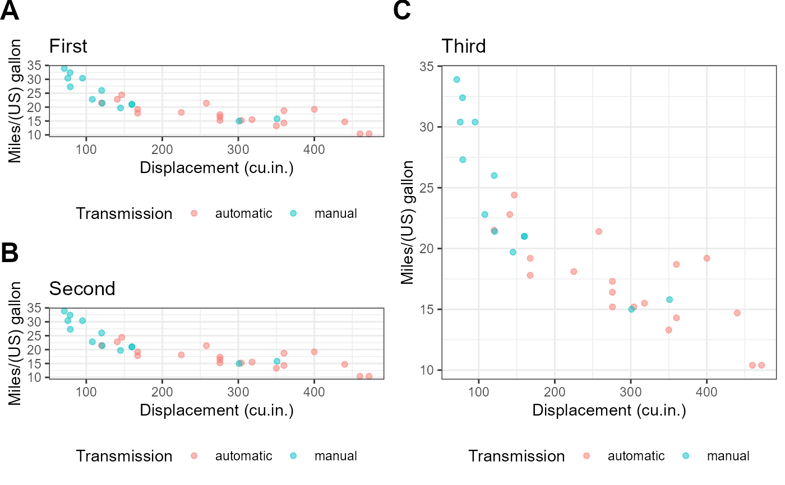

e_plot_grid_corner_label() instead of labs(tag=)R/e_plot_grid_corner_label_ALL.R
e_plot_grid_corner_label_list.RdAdd corner labels to all grobs in a list using e_plot_grid_corner_label() instead of labs(tag=)
e_plot_grid_corner_label_list( p_list, labels_corner = LETTERS, font_color = "black", font_size = 18, font_face = "bold" )
| p_list | list of ggplot grobs |
|---|---|
| labels_corner | list of labels for top-left corner of plot |
| font_color | color |
| font_size | point size |
| font_face | font face |
list of grobs with top-left corner labels
# make one example plot library(ggplot2) p <- ggplot(dat_mtcars_e, aes(x = disp, y = mpg, colour = am)) p <- p + theme_bw() p <- p + geom_point(alpha = 0.5) p <- p + labs( x = labelled::var_label(dat_mtcars_e[["disp"]]) , y = labelled::var_label(dat_mtcars_e[["mpg"]]) , colour = labelled::var_label(dat_mtcars_e[["am"]]) #, tag = "A" ) p <- p + theme(legend.position = "bottom") # "none" p <- p + theme(plot.caption = element_text(hjust = 0)) # Default is hjust=1, Caption align left #print(p) # make 3 plots with separate titles p1 <- p + labs(title = "First" ) p2 <- p + labs(title = "Second") p3 <- p + labs(title = "Third" ) # Make a list of the plots p_list <- list( p1 , p2 , p3 ) # label all of the plots p_list <- e_plot_grid_corner_label_list(p_list) # Arrange in a grid library(gridExtra) #> #> Attaching package: 'gridExtra' #> The following object is masked from 'package:dplyr': #> #> combine library(grid) lay_grid <- rbind( c(1, 3) , c(2, 3) ) p_arranged <- gridExtra::arrangeGrob( grobs = p_list , layout_matrix = lay_grid ) %>% ggpubr::as_ggplot() # print the plots p_arranged %>% print() 